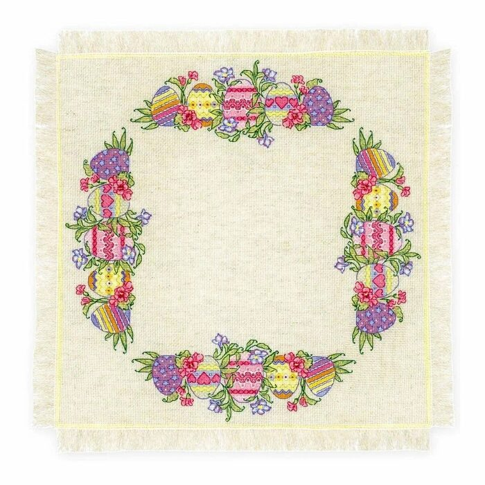

14/11
суббота,
15:00–18:00
Вышивка
с кутюрье Dior
Мастер-класс с Ларисой
С Ларисой из ателье Dior вышиваем праздничную салфетку и знакомимся с кутюрными техниками. Подойдёт и тем, кто впервые берёт в руки иглу.
Сарафан
Салон

€50